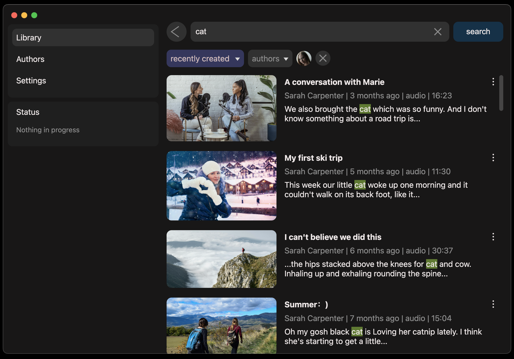
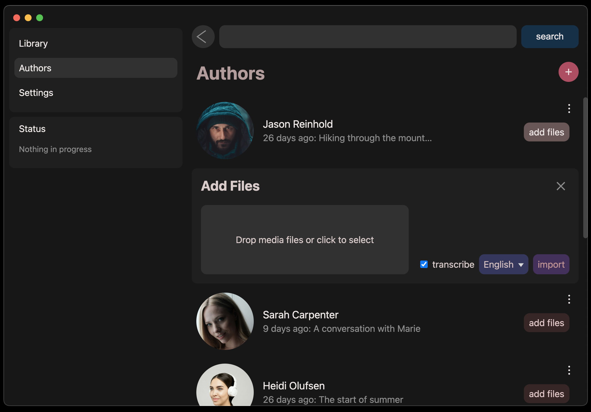
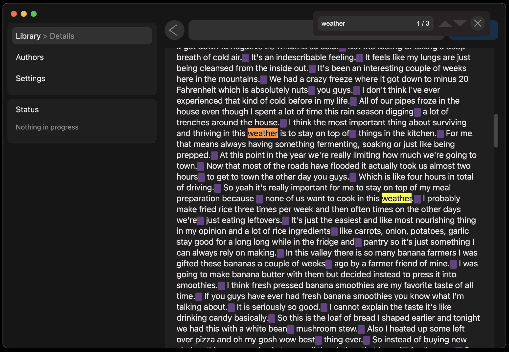
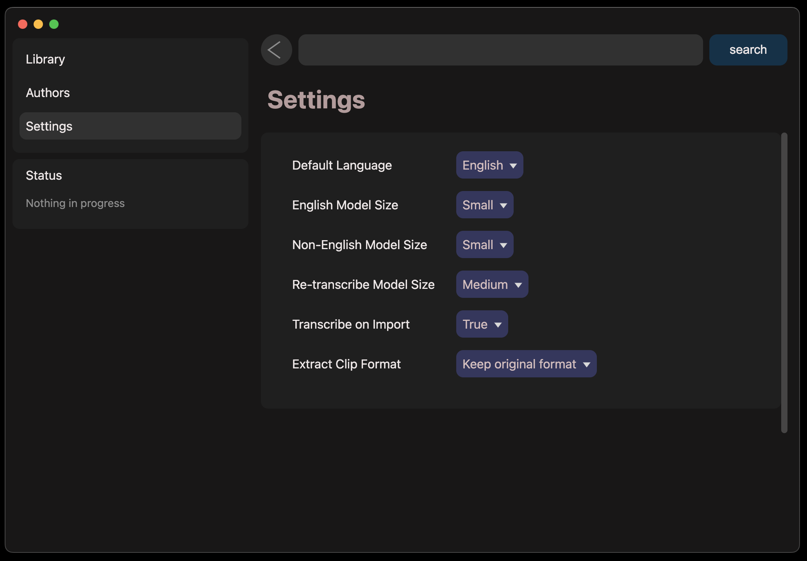
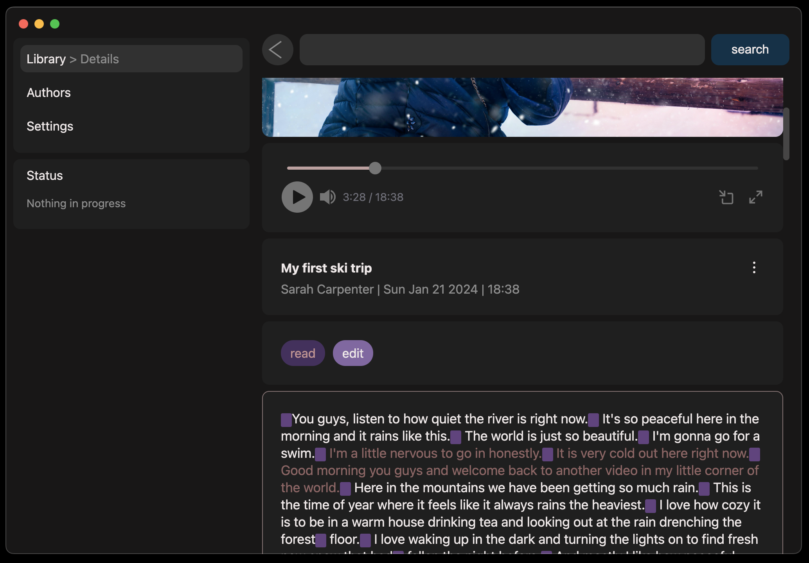
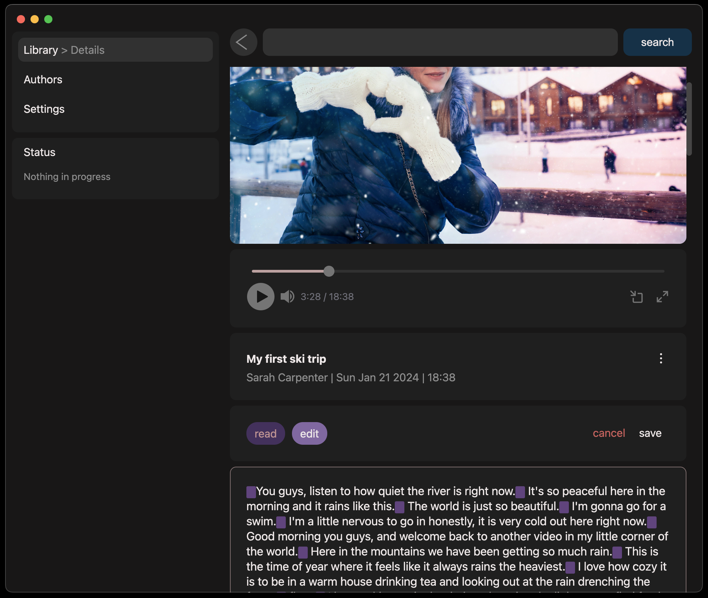
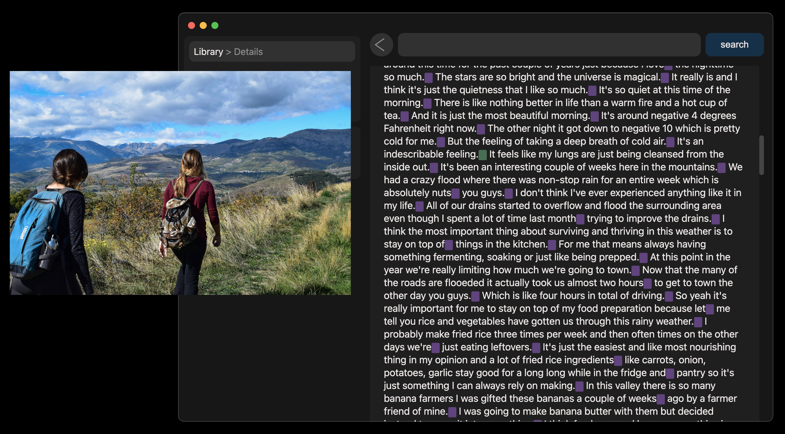
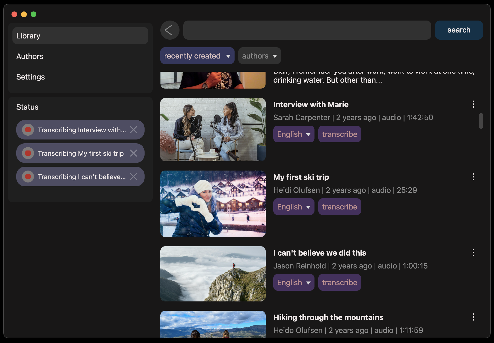

Quietone
Transcribe audio and video so that you can find what you are looking for instantly

Extract clips
Authors
Search inside transcripts
Adjust model sizes and output formats
Retranscribe sections
Edit transcripts
Watch the video as you navigate through the transcript
Stop transcription while it is in progress
